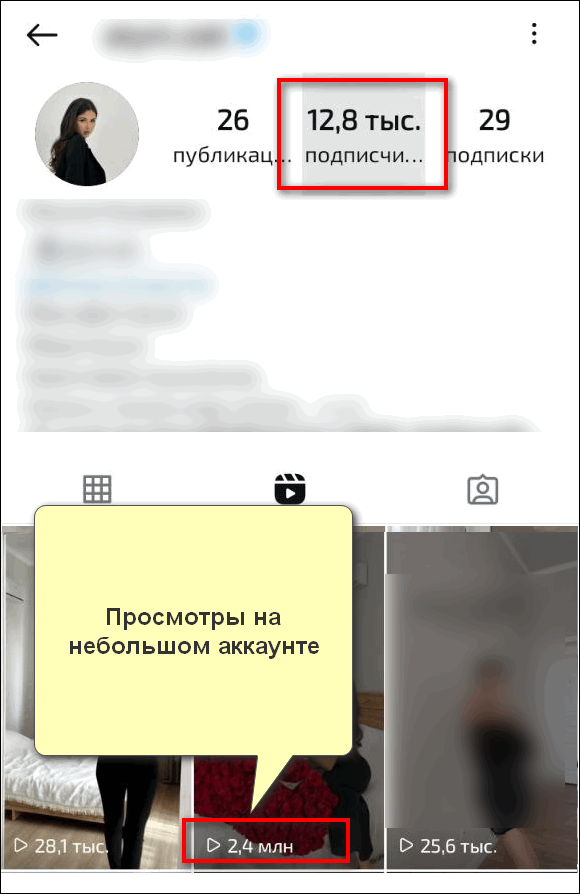
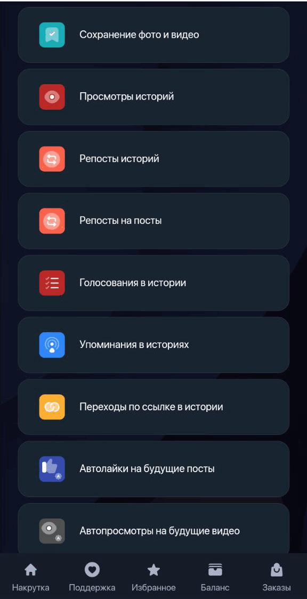
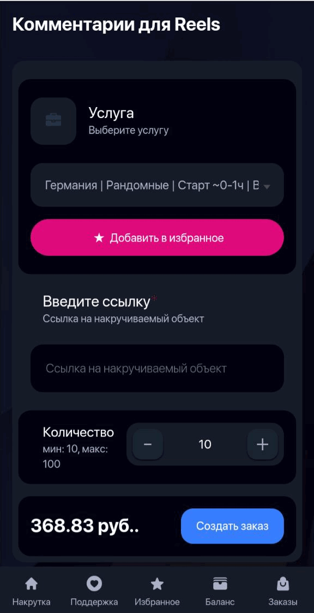
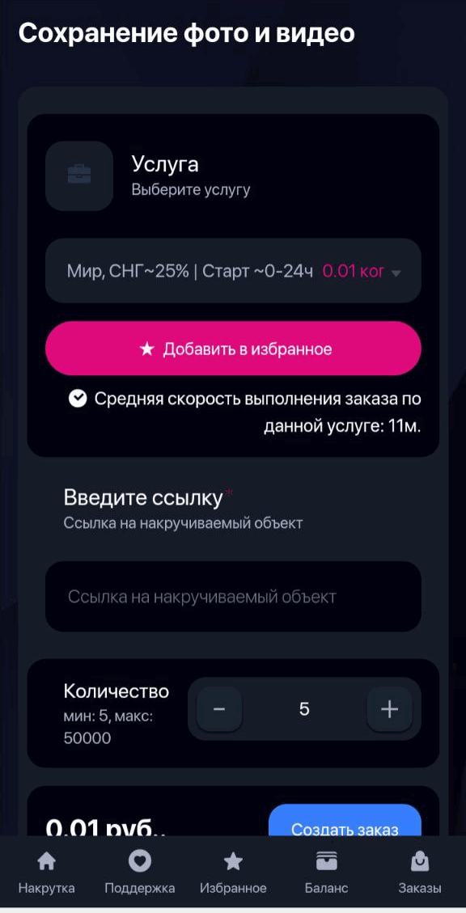

Алгоритмы в Инстаграм: как попасть в ТОП

В Инстаграме* есть алгоритмы, которые влияют на продвижение публикаций. Они зависят от лайков пользователя, от его активности, подписок.
Коротко об алгоритмах
Инстаграм* поддерживает всего один алгоритм продвижения постов, построенный на интересах и времени, проведенного на определенных публикациях. Так, в ТОП могут выйти публикации, которые были размещены на страницах с минимальным количеством подписчиков.
 Что влияет на продвижение:
Что влияет на продвижение:
- сколько времени было проведено на определенной записи. То есть, выходили ли зрители с поста и когда именно;
- лайки и комментарии. Какое количество видов активности присутствует под публикацией;
- Инстаграм* легче продвигает недавно созданные страницы, чем давно существующие.
В 2024 году алгоритмы продвижения снова претерпели изменений: чтобы получить внимание от потенциальной аудитории, автору контента нужно работать над стратегией и использовать трендовые идеи. Так, особую популярность заслужили разговорные видео и посвященные социально важным темам.
Продвижение маленьких блогов в Инстаграме*
В социальной сети, чтобы маленький блог заслужил внимание, нужно публиковать короткие Reels. Этот формат контента больше остальных получает повышенное число просмотров и переходов в профиль. Возьмем к примеру ситуацию, когда записи крупного сообщества с миллионными подписчиками получают менее 50 тысяч просмотров, а первое видео на маленькое аккаунте с минимальной смысловой нагрузкой может выйти в Рекомендации на 1,2 млн.

Это связано с длительностью клипов: смотреть записи продолжительностью не более 15 секунд проще, чем вникать в серьезную тему. К тому же, пользователи чаще приходят в социальные сети ради развлечений. Но есть и обратная ситуация – страницы экспертов. Для работы с ними нужна постоянная аудитория, которая приходит в блог за полезной информацией и только иногда ради развлечений. В этом случае нужно проработать стратегию, направленную на увеличение числа полезного контента и добавления публикаций для развлечения, учитывая текущие тренды, популярные звуки и идеи.Длительность Reels
От продолжительности клипов в Рилс зависит их скорость попадания в Рекомендации. Советы по продвижению:
- маленьким сообществам и блогам нужно сделать акцент на коротких видеоклипах, добавляя в конце приглашение к подписке и комментариям;
- средним (от 100 000) нужно обратить внимание на описание – вписывать полезную информацию, рассказывать аудитории последние новости;
- крупным – снимать как короткие, так и продолжительные клипы. Способ с разбивкой одного длинного видео на несколько маленьких поможет собрать больше подписчиков, заставить зрителей перейти в аккаунт, чтобы увидеть продолжение.
Популярные видеомейкеры создают отдельные плейлисты, где собирают длинные видео в определенной последовательности. Так зрители переходят от одного клипа к другому или посещают страницу, чтобы отыскать продолжение. Это увеличивает охват профиля и соответственно, продвигает в Рекомендации.
Продвижение блогов соблюдая лимиты
Пользуясь накруткой, нельзя забывать о вероятности блокировки страницы из-за лимитов. В социальной сети есть негласные ограничения, влияющие на количество действий в сутки. И они отличаются по давности создания аккаунта, предыдущему опыту. Так, для страницы созданной менее месяца назад, лучше не накручивать сразу 1000 подписчиков, а постепенно добавлять по 100-200 за несколько суток. То же касается и других видов активности. Лимиты, которые стоит соблюдать:
- крупные сообщества: до 3000 действий в сутки от самого аккаунта. Подписка, комментарии, лайки;
- средние: до 1500 в день;
- маленькие – до 300.
На аккаунтах, созданных менее недели назад, лучше совершать минимальное количество действий. То есть: ограничиться не более 50 видами активности и не публиковать за сутки более 5 записей.
Боты - как один из вариантов раскрутки Инстаграм*
Удобным способом в продвижении являются Телеграм-боты: вам не нужно переходить на какой-то сайта, регистрироваться и ожидать уведомления на почту. Достаточно перейти в чат, выбрать услугу и подождать, пока завершится оформление заказа. @V_TOP_soc_bot Чтобы страница стала посещаемой и популярной среди целевой аудитории нужно воспользоваться услугой комплексное продвижение. Она включает лайки, комментарии, подписчиков. Владелец страницы может выбрать тип подписки по длительности: от пары дней до месяца, в течение которого будут добавлены новые фанаты, комментарии. Там же можно выбрать дополнительные критерии: качество и геолокацию. @Smm_bloger_bot Вариант с собственными комментариями подходит для продвижения средних и маленьких сообществ. Владелец задает тему, согласно которой исполнители должны оставлять отклики. Делятся по половой принадлежности и географическим данным. Минимальная цена за собственные комментарии в количестве до 1 тысячи в день — 1.65 за штуку.

@otec_smm_bot. Один из вариантов продвижения в Инстаграм* через этого бота — упоминания в историях. Этот способ отличается тем, что накрутка происходит не на определённые публикации, а на целый аккаунт. Но активность зависит от числа подписчиков на той странице, которая сделала Сторис и отметила по никнейму. Выбирая такой способ продвижения лучше указать, чтобы задачу выполняли реальные пользователи, а не боты.
@nakrutimsmm_bot. С помощью раздела «Накрутка лайков/комментариев в Reels» можно продвинуть свой аккаунт и сразу заслужить первых подписчиков, не оформляя дополнительной услуги. В разделе с получением комментариев можно выбрать страну: от СНГ до Кореи, Тайланда и Германии. Цена за один отклик – 36 рублей, а минимальное количество для заказа – от 10.
@TOPnakrutok_bot Бот предлагает первую услугу получить бесплатно. После регистрации на основном сайте, заказчик получит до 100 новых подписчиков. Кроме пополнения счета можно использовать промокод, приглашать друзей и получать за это бонусы. То есть, оформлять услуги по продвижению можно без дополнительной оплаты: воспользоваться выгодными предложениями от бота. Бонусом можно использовать сервисы для накрутки Инстаграм*: SMM-bloger.ruSmmplace.ru.Как составлять описание
Кроме качественно оформленного контента нужно помнить об описании. Этот раздел также влияет на продвижение и не редко является основным для внимания зрителей. Работает со страницами экспертов, где полезная информация главное за чем приходят потенциальные клиенты. В описание добавляют:
- полезную информацию относительно темы публикации. Допустим, вы продемонстрировали работу какого-то приложения и должны в описании указать: где его взять, сделать анонс и упомянуть, чтобы потенциальные клиенты не забыли подписаться;
- хештеги. Личные, придуманные автором блога или общие, позволяющие найти контент по определенному запросу;
- упоминания других аккаунтов, которые имеют отношение к видеоролику.
Описание необходимо, как стандартным публикациям в виде фотографий, так и Reels. Бывают и исключения: социальные видео, где вся необходимая информация есть в самом клипе. С новыми алгоритмами записи, где есть описание размером более 300 символов, быстрее попадают в рекомендации. Потому что система оценивает их как интересные и вероятно интересные целевой аудитории.
Комментарии и лайки: что нового
Теперь комментарии и лайки не такая ценная валюта внутри социальной сети, но все остается одним из важных критериев. В Инстаграме* важнее становится время, которое потенциальная аудитория потратила на просмотр. То есть: удержать внимание зрителя да так, чтобы тот не покинул видеозапись раньше, чем она закончится. Лайки и комментарии влияют на рекомендацию страницы другим пользователям: друзьям и подписчикам. Если кто-то из вашей целевой аудитории поставил вам лайк, то эта же запись будет отображена у его друзей в «Рекомендациях». Поэтому основной показатель популярности – охваты. Там же, в статистике, можно посмотреть откуда приходит аудитория, на каких записях останавливается чтобы прочесть или сохранить. Согласно этому можно составлять план дальнейшего развития аккаунта.
Зачем меняют алгоритмы в Инстаграме*
Алгоритмы в социальной сети – это критерии, согласно которым будут подобраны и порекомендованы публикации определенным пользователям. То есть, если вы предпочитаете смотреть видео о котиках и часто их комментируете, ставите лайки или сохраняете – Инстаграм* будет чаще их показывать в разделе «Интересное». Ваши подписчики также станут получать рекомендации, где будут ваши интересы. С увеличением количества контента, с добавлением новых разделов как «Reels» механика выбора интересного и полезного была переработана. Теперь она направлена больше на индивидуальные критерии каждого пользователя, включая групповые интересы и объединение в отдельные небольшие сообщества. Замечали ли вы, что встречаете под интересными вам публикациями одних и тех же комментаторов? Благодаря этим изменениям каждый получает более персонализированные записи и может корректировать предпочтения, пользуясь кнопками «Интересно» и «Не интересно». Для создателей контента эти изменения также положительны: не нужно создавать публикации на несколько разных тем, ожидая что в ТОП вырвется хотя бы одна.